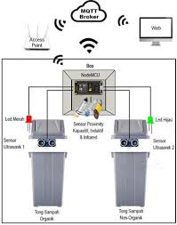

Ciptakan lingkungan yang bersih
Tempat Sampah Pintar (Smart Bin) adalah tempat sampah yang dilengkapi dengan teknologi canggih untuk meningkatkan efisiensi pengumpulan, pemilahan , dan pengelolaan sampah.
Cara kerja dari Smart Bin adalah ketika sampah organik, anorganik, dan logam ke dalam Smart Bin sampah tersebut akan di pilah secara otomatis oleh tempat sampah ini jadi kita tidak perlu lagi untuk memilah antara organik, anorganik maupun logam.